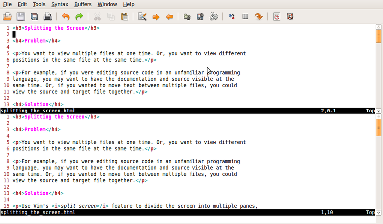

You want to view multiple files at one time. Or, you want to view different positions in the same file at the same time.
For example, if you were editing source code in an unfamiliar programming language, you may want to have the documentation and source visible at the same time. Or, if you wanted to move text between multiple files, you could view the source and target file together.
Use Vim's split screen feature to divide the screen into multiple panes, each of which can contain a file.
| Command | Action |
|---|---|
| :split file | Splits the window horizontally. |
| :vsplit file | Splits the window vertically. |
(If file is specified, that file is shown in the upper/left, as appropriate, pane; if not, both panes show the current file).

Gvim instance in which the screen is
split horizontally, showing the same file in each pane.
Terminology: is 'pane' correct?
To move between windows you use <Ctrl>-w (menmonic: control window). To move in a specific direction, add the relevant movement key. link recipe So, to move upwards: <Ctrl>-w k.
To close the active window use :q, just as you would to close a window normally.
You can reduce/increase the size of the current window with <Ctrl>-w - and <Ctrl>-w+, respectively. To specify the size of a window when you open it, prefix the :split command with the desired height/width in lines. For example, to show README in a window of 5 lines high: 5 :split README.
The default behaviour of both :split and :vsplit is to show the current file twice. This is more useful than it may first sound.
When working with long documents it means that you can view the top and bottom of the file simulteneously. If you use foldingRecipe~\ref{sec:man-fold} explains how to manually create folds. Link other folding recipes when they're written? you can use one window to display an outline of a document while editing a specific section in another. For example, when I'm working on reports I use :30 :vsplit to view the first and second level headings along the left of the screen, while editing the report in the main window.
If you :set scrollbind before you split the screen the windows scroll together. explain better